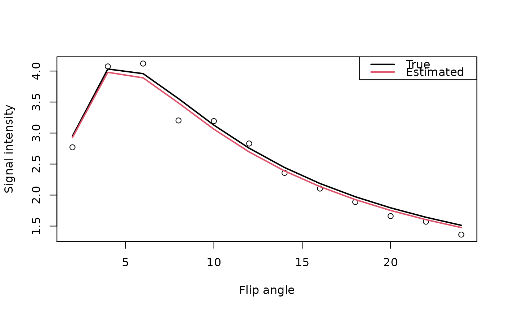

relaxation-methods.RdEstimation of the intrinsic tissue relaxivity is achieved through nonlinear optimization and the dynamic signal intensities are converted into contrast agent concentration.
R10.lm(signal, alpha, TR, guess, control = minpack.lm::nls.lm.control())
E10.lm(signal, alpha, guess, control = minpack.lm::nls.lm.control())
R1.fast(flip, ...)
# S4 method for array
R1.fast(
flip,
flip.mask,
fangles,
TR,
control = minpack.lm::nls.lm.control(),
multicore = FALSE,
verbose = FALSE
)
CA.fast(dynamic, ...)
# S4 method for array
CA.fast(
dynamic,
dyn.mask,
dangle,
flip,
fangles,
TR,
r1 = 4,
control = minpack.lm::nls.lm.control(maxiter = 200),
multicore = FALSE,
verbose = FALSE
)
CA.fast2(dynamic, ...)
# S4 method for array
CA.fast2(dynamic, dyn.mask, dangle, flip, fangles, TR, r1 = 4, verbose = FALSE)| signal | is the vector of signal intensities as a function of flip angles. |
|---|---|
| alpha | is the vector of flip angles (in degrees). |
| TR | is the relaxation time (in seconds) used in the acquisition of the MRI data. |
| guess | is the vector of initial values for the parameters of interest: \(m_0\) and \(R_{10}\). |
| control | An optional list of control settings for |
| flip | a multidimensional array of contrast agent concentrations. The last dimension is assumed to be a function of the flip angles, while the previous dimenions are assued to be spatial. |
| ... | Additional variables defined by the method. |
| flip.mask, dyn.mask | is a (logical) multidimensional array that identifies the voxels to be analyzed. |
| fangles | is the vector of flip angles (in degrees). |
| multicore | is a logical variable (default = |
| verbose | is a logical variable (default = |
| dynamic | a multidimensional array of contrast agent concentrations. The last dimension is assumed to be temporal, while the previous dimenions are assued to be spatial. |
| dangle | is the flip angle used to acquire the dynamic MRI data. |
| r1 | is the spin-lattice relaxivity constant (default = 4.39 for 1.5T). For 3T data it may be necessary to adjust this value. |
A list structure is produced with (all or some of the) parameter estimates
Scaling factor between signal intensity and T1.
Pre-injection tissue relaxation rate (3D array); \(R1_{0}=1/T1_{0}\).
Time-varying tissue relaxation rate (4D array); \(R1(t)=1/T1(t)\).
Contrast agent concentration (4D array).
The E10.lm and R10.lm functions estimate parameters for a
vector of observed MR signal intensities, as a function of flip angle, using
the following relationship $$S(\alpha) = m_0 \frac{\sin(\alpha) \left(1
- \exp{-\textrm{TR}/\textrm{T}_1}\right)}{\left(1 - \cos(\alpha)
\exp{-\textrm{TR}/\textrm{T}_1}\right)}.$$ The only difference between the
two functions is exactly what is being estimated in the nonlinear least
squares formulation. They both require the function
nls.lm that uses the Levenberg-Marquardt
algorithm.
The CA.fast function calls on R1.fast to rearrange the assumed
multidimensional (2D or 3D) structure of the multiple flip-angle data into a
single matrix to take advantage of internal R functions instead of loops
when calling E10.lm. Conversion of the dynamic signal intensities to
contrast agent concentration is performed via $$[Gd] =
\frac{1}{r_1}\left(\frac{1}{\textrm{T}_1} -
\frac{1}{\textrm{T}_{10}}\right).$$
The CA2.fast function assumes only two flip angles have been acquired
and uses an approximation to the nonlinear relationship between signal
intensity and flip angle enable to conversion from signal intensity to
contrast agent concentration.
The longitudinal relaxivity is set, by default, to \(r_1=4(mM\cdot{s})^{-1}\) which is a reasonable value for gadolinium contrast agents at 1.5 Tesla. Double-check the scanning procedure manual to ensure the correct value is used.
Buxton, R.B. (2002) Introduction to Functional Magnetic Resonance Imaging: Principles & Techniques, Cambridge University Press: Cambridge, UK.
Li, K.-L., Zhu, X.P., Waterton, J. and Jackson, A. (2000) Improved 3D quantiative mapping of blood volume and endothelial permeability in brain tumors, Journal of Magnetic Resonance Imaging, 12, 347-357.
Li, K.-L., Zhu, X.P., Kamaly-Asl, I.D., Checkley, D.R., Tessier, J.J.L., Waterton, J.C. and Jackson, A. (2000) Quantification of endothelial permeability, leakage space, and blood volume in brain tumors using combined T1 and T2* contrast-enhanced dynamic MR imaging, Journal of Magnetic Resonance Imaging, 11, 575-585.
Parker, G.J.M. and Padhani, A.R. (2003) \(T_1\)-w DCE-MRI: \(T_1\)-weighted Dynamic Contrast-enhanced MRI, in Quantiative MRI of the Brain (P. Tofts ed.), Wiley: Chichester, UK, pp. 341-364.
Brandon Whitcher bwhitcher@gmail.com
## Parameters for simulated data
S0 <- 100
TR <- 5 / 1000 # seconds
T1 <- 1.5 # seconds
alpha <- seq(2, 24, by=2) # degrees
## Signal intensities for spoiled gradient echo image
gre <- function(S0, TR, T1, alpha) {
theta <- alpha * pi/180 # radians
S0 * (1 - exp(-TR/T1)) * sin(theta) / (1 - cos(theta) * exp(-TR/T1))
}
set.seed(1234)
signal <- array(gre(S0, TR, T1, alpha) + rnorm(length(alpha), sd=.15),
c(rep(1,3), length(alpha)))
out <- R1.fast(signal, array(TRUE, rep(1,3)), alpha, TR)
unlist(out)
#> M0 R10
#> 99.5197735 0.6534572
plot(alpha, signal, xlab="Flip angle", ylab="Signal intensity")
lines(alpha, gre(S0, TR, T1, alpha), lwd=2, col=1)
lines(alpha, gre(c(out$M0), TR, 1/c(out$R10), alpha), lwd=2, col=2)
legend("topright", c("True","Estimated"), lwd=2, col=1:2)
